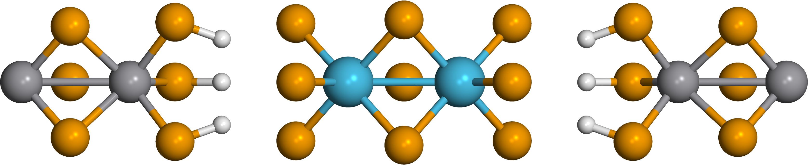

First-principles conductance of a 1D Hf₂Se₉–VSe₃ heterojunction working
A single Hf₂Se₉ molecule bridges two metallic VSe₃ chains, forming a 1D molecular junction grown inside a carbon nanotube. The project computes the junction's conductance from first principles and asks one physical question: does current flow through the molecule, and through which orbital? The transport evidence says yes — removing the molecule kills the conductance entirely — and the present frontier is correcting the molecular level positions (PBE underestimates the gap) so the resonance sits where it physically should.

Idea
VSe₃ forms a 1D chain; among the trichalcogenides its coordination had no experimental report, and here it is identified as trigonal prismatic (TP) and is metallic — a natural 1D electrode. Encapsulating a Hf₂Se₉ molecule between two such chains makes a metal–molecule–metal junction. Because the molecule's HOMO–LUMO gap is tiny in PBE (0.024 eV), its frontier resonance sits almost on the Fermi level and transmission looks "too good." Whether the headline picture is resonant or non-resonant tunnelling therefore hinges on getting the molecular level alignment right.
Method
- DFT (SIESTA / VASP): chain and junction relaxation, band structure, PDOS. Production functional is vdW-DF2 — PBE+D2 was anomalously unstable for the Hf₂Se₉ relaxation and was dropped (02. Hf₂Se₉ stability).
- Transport (TranSIESTA / TBtrans): ~220-atom zero-bias NEGF, electrode k = 100, broadening η = 0.005 eV. Transmission T(E), PDOS, and eigenchannels (Re/Im/|ψ|² cubes + z-profile).
- Molecular-level correction (DFT+Σ): orbital shifts $\Delta_i=\varepsilon_i^{\text{B3LYP}}-\varepsilon_i^{\text{vdW-DF2}}$ from the vacuum molecule, applied to the device Hamiltonian as a projector $\Delta H_{\mu\nu}=\sum_i \Delta_i\,(C^i_\mu)^{*}C^i_\nu$ on the Hf/Se block — implemented through TBtrans's built-in δH, no source patch.
Status
Structure is settled (vdW-DF2 relaxation; 60° staggered registry favoured by 43.3 meV). Transport is converged: scattering-region length is converged, k-grid and η converged, and the three-way comparison pristine 0.70 / heterojunction 0.35 / disconnected 0 for $T(E_F)$ proves the molecule is the sole conduction bridge (eigenchannel $\tau_0 = 0.999$). The DFT+Σ molecular-level correction is applied ($\Delta_\text{HOMO}=-1.015$, $\Delta_\text{LUMO}=-0.286$ eV; isolated-molecule gap 0.02 → 0.75 eV): on the 9-cell device $T(E_F)$ drops $0.355\to0.051$ and the channel moves to the HOMO resonance. The remaining analysis is the interface charge-transfer $\Delta\rho$ — the δH correction enters at the TBtrans post-processing step, so the zero-bias $T(E)$ suffices and no finite-bias chain is needed.
How this site is organized
- Motivation — the experiment behind this calculation (the starting point).
- Plan — figure plan and the near-term computation queue.
- Methods — DFT (vdW-DF2) + NEGF setup and the DFT+Σ correction.
- Results — the current junction results plus the chronological topic reports that got us here.
- Log — dated meeting notes.